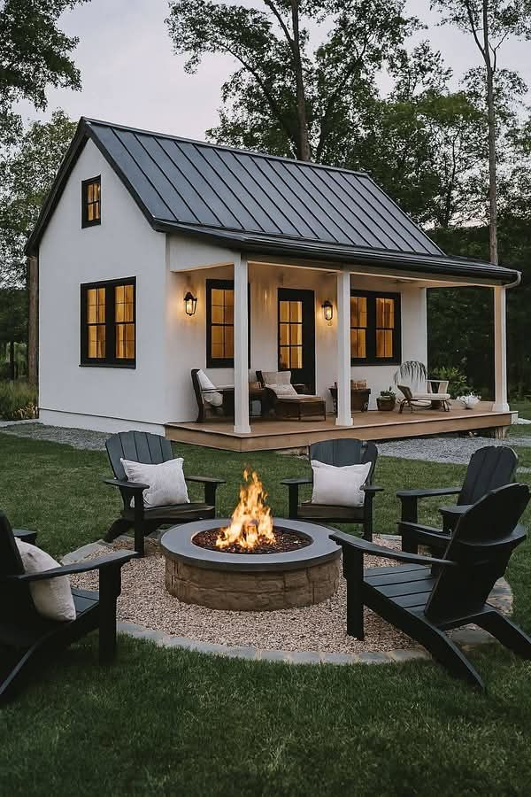

Полная готовность к проживанию
Дом под ключ в комплектации золотой ключ
Золотой ключ — это полный цикл до готового для проживания дома. Здесь заказчик получает не просто коробку, а завершенный объект с чистовой отделкой и базовым благоустройством.
- От 89 000 ₽/м²
- Максимальная готовность
- Под заселение
Что входит в золотой ключ

Почему выбирают золотой ключ
- Один подрядчик отвечает за весь цикл до финального результата.
- Не нужно отдельно координировать чистовые бригады и финальные этапы.
- Быстрее путь к заселению и эксплуатации дома.
- Меньше рисков потери качества на стыках между подрядчиками.
Когда золотой ключ особенно выгоден
FAQ по золотому ключу
Да, это и есть основная идея формата: дом доводится до состояния, пригодного для проживания.
Да, состав можно уточнять под бюджет, проект и желаемый набор финальных решений.
Да, потому что он включает максимум работ и минимизирует объем того, что остается заказчику после сдачи дома.
Другие комплектации
Контакты
Оставьте заявку, если хотите рассчитать дом в формате золотой ключ с полной готовностью к проживанию.
+7(921)618-23-77- Telegram: @CKcaizer
- Email: info@sk-kaizer.ru